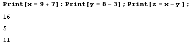

Урок 3
Послідовні операції
Виконуючи обчислення в WM ви виконуєте певну послідовність операцій. Ви можете писати кожну операцію в окремій секції, але інколи буває зручно помістити декілька операцій в одну секцію. Для розділення операцій можна використати символ крапки з комою ;.
Оператор крапки з комою пригнічує виведення результату. Якщо ви поставите крапку з комою в кінцевому виразі послідовності операцій, WM інтерпретує це як послідовність операцій з порожньою операцією в кінці.
Як видно вище, виконання операції відбулося, але виведення результату було пригнічено.
Буває необхідно виводити результат кожної операції, розміщеної в даній секції. Для цього можна писати кожну операцію з нового рядка.
Або обгорнути кожну операцію функцією Print.
Використання попередніх результатів
При виконанні обчислень буває необхідно використати попередні отримані результати. Для цього ви можете використовувати змінні, але є ще один зручний спосіб – це символ %, який замінюється останнім отриманим результатом.
Можна використовувати декілька символів %, для отримання результату, що передує останньому, передостанньому і т. д.
При використанні оператора % потрібно розуміти, що він повертає результати в порядку їх обчислень, від останнього до першого, а не в порядку їх розміщення в документі.
У WM, як було уже сказано, секції мають позначення. Можна також використовувати формат %number, де number – номер вихідної секції результат якої потрібно використати.
Переривання обчислень
Бувають випадки коли необхідно зупинити обчислення, які виконує WM. Наприклад, ви задали якесь хибне значення або обчислення триває занадто довго або ви написали безкінечний цикл і програма повисла.
Наприклад, обчислення факторіалу 1 000 000 і його виведення триває близько 15 секунд.
Дужка секції, яка обчислюється в даний момент стає зафарбованою у чорний жирний колір.
Для переривання обчислення можна використовувати комбінацію клавіш Alt + ,.
У появленому меню виводиться перелік можливих дій. Виборіть Abort Command Being Evaluated для переривання.
Перервати обчислення відразу можна за допомогою комбінації клавіш Alt + ..
Ці команди також можна викликати перейшовши у меню Evaluation.
Символьні і чисельні обчислення
Система WM є системою комп’ютерної алгебри, тобто підтримує символьні (аналітичні) обчислення – ті самі обчислення, які ви виконували у школі на уроках алгебри. Ось приклад символьного обчислення буквеного (алгебраїчного) виразу.
При написанні буквених виразів важливо правильно ставити дужки. У прикладі вище, якщо прибрати дужки знаменника, то буде отримано зовсім інший результат, оскільки знаменником буде число 3, а вираз x^2 стане окремим множником.
Часто існує кілька можливих способів для запису одного і того ж алгебраїчного виразу. Ви можете використовувати вбудовані алгебраїчні функції для приведення алгебраїчного виразу до тієї чи іншої форми.
Функція Factor розкладає многочлен на множники, а функція Expand відкриває дужки і приводить подібні члени. Ось ще один наглядний приклад.
Функція Factor зазвичай повертає більш простий вираз, але в деяких випадках повертається більш складний вираз.
Для отримання найбільш простої форми виразу використовуйте функцію Simplify.
Щоб вказати, яким чином записувати дріб використовуйте функції Together та Apart.
Функція Together приводить дріб до спільного займенника, а Apart розкладає дріб на суму простих дробів.
Детальніше про функції алгебраїчних перетворень можна дізнатися за посиланням.
Символьним (аналітичним) способом обчислюються також числові вирази, за умови що усі числа такого виразу є цілими числами.
Як видно, символьні обчислення повертають лише точні результати.
Якщо б хоча одне число числового виразу є десятковим дробом, то вираз буде обчислений чисельним способом, тобто маємо справу з чисельними обчисленням.
Чисельні обчислення завжди повертають наближені до точного результати. Зауважимо, що 15. це позначення десяткового дробу 15.0 (можна було написати 15.0). Важливо зрозуміти, що на відмінну від реального світу, де десятковий дріб 15.0 рівний цілому числу 15, у світі віртуальному вони не рівні. Справа в тому, що в пам’яті комп’ютера точно можуть бути представлені лише цілі числа. Десяткові дроби завжди представляються у комп’ютері з деякою похибкою. Саме тому, числові вирази, що містять десяткові дроби самі по собі уже є наближеними і обчислюються чисельно. Вони не можуть бути обчислені символьним способом, оскільки символьний спосіб за визначенням повертає точне значення обчислень, а в даному випадку це неможливо.
Ми також можемо спочатку обчислити числовий вираз символьним способом, а після того чисельно знайти його наближене значення.
Про функцію N було уже сказано в першому уроці, вона знаходить наближене значення переданого їй виразу.
Ви також можете обчислювати алгебраїчні вирази, що містять десяткові числа. В такому випадку буде мати місце змішаний тип обчислень: вираз у цілому буде обчислений символьним способом, але числа у ньому будуть обчислюватись чисельно.
Хоча так відбувається не завжди.
Тому тут краще бути обережним, і використовувати функцію N для чисельного обчислення чисел.
Символьно і чисельно можна обчислювати не лише вирази, а й знаходити похідну або інтеграл функції, її границю, розв’язувати рівняння та інше. Детальніше тут і тут.
Чисельні функції починаються з префіксу N.